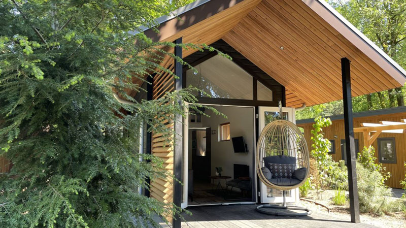
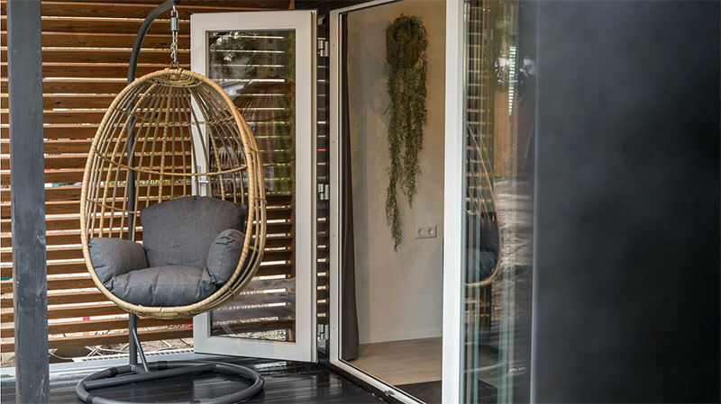
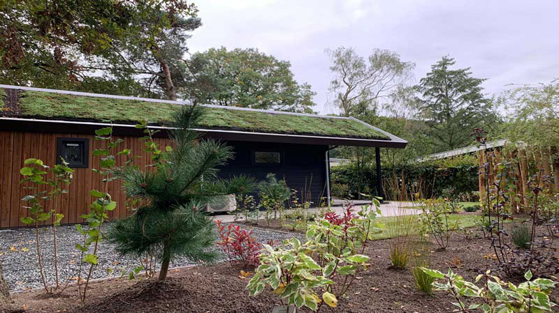

Te koop: Eco tiny lodge op de Veluwe
De Eco Berken Lodge is uniek in ontwerp, uitvoering en ligging! Duurzaam en geheel van het gas af. Naar keuze in te richten met 2 of 3 slaapkamers. Voor de bouw van een Eco Berken Lodge is gebruik gemaakt van hoogwaardige natuurlijke duurzame materialen zoals Waxwood Gold gevelbekleding, zinklook daken en kunststof kozijnen.
Duurzaam gebouwd
Dit is een faketekst. Alles wat hier staat is slechts om een indruk te geven van het grafische effect van tekst op deze plek. Wat u hier leest is een voorbeeldtekst. Deze wordt later vervangen door de uiteindelijke tekst, die nu nog niet bekend is. De faketekst is dus een tekst die eigenlijk nergens over gaat. Het grappige is, dat mensen deze toch vaak lezen. Zelfs als men weet dat het om een faketekst gaat, lezen ze toch door.
Luxe uitstraling
Dit is een faketekst. Alles wat hier staat is slechts om een indruk te geven van het grafische effect van tekst op deze plek. Wat u hier leest is een voorbeeldtekst. Deze wordt later vervangen door de uiteindelijke tekst, die nu nog niet bekend is. De faketekst is dus een tekst die eigenlijk nergens over gaat. Het grappige is, dat mensen deze toch vaak lezen. Zelfs als men weet dat het om een faketekst gaat, lezen ze toch door.
Natuurlijke omgeving
Dit is een faketekst. Alles wat hier staat is slechts om een indruk te geven van het grafische effect van tekst op deze plek. Wat u hier leest is een voorbeeldtekst. Deze wordt later vervangen door de uiteindelijke tekst, die nu nog niet bekend is. De faketekst is dus een tekst die eigenlijk nergens over gaat. Het grappige is, dat mensen deze toch vaak lezen. Zelfs als men weet dat het om een faketekst gaat, lezen ze toch door.